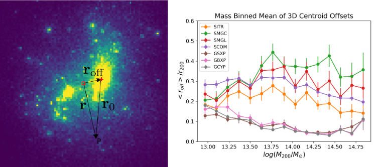

Welcome to my homepage!
My name is Ziang Yan ( How to pronounce it? ), a postdoctoral fellow at the German Centre for Cosmological Lensing based at Ruhr-Universität Bochum. Before joining GCCL, I did my PhD and MSc studies at Department of Physics and Astronomy, and my undergraduate study at the the Department of Physics, Tsinghua University. University of British Columbia.
I'm a member in the Kilo-degree Survey, Canada-France Imaging Survey, and an in-kind contributor of Dark Energy Science Collaboration.
My research focuses on measuring and analyzing observational data of the large-scale structure of our Universe. See "What is cosmology?" for a brief and general introduction to my research. See research for my current and previous research projects.
My CV: Resume
Contact me:
Email: yanza21 at astro.ruhr-uni-bochum.de
Office: GAFO 03 / 925
My Research
Overview
I'm interested in cross-analyzing different "tracers"(galaxy number density, shear, tSZ, X-ray, CIB, CMB lensing, etc) of the large-scale structure (LSS) to understand different physical processes on different scales. In addition, I'm developing tools and pipelines , as well as implementing machine learning for ongoing and future LSS measurements and analysis.
See my publication list in my Google Scholar Profile.
Cross-correlating different LSS tracers
Cosmic star formation history, extragalactic dust properties, and galaxy abundance with galaxy-CIB cross-correlations

(Left panel: cosmic star formation history constrained from KiDS x CIB; right panel: dust SED constrained from unWISE x CIB)
Cosmic Infrared Background (CIB) encodes rich information about cosmic star formation history, extragalactic dust properties, and galaxy abundance. We measured the tomographic cross-correlation between KiDS galaxy maps and Planck CIB maps to constrain cosmic star formation history up to z~1.5. Our results agree with previous multiwavelength studies on star formation history.
We further study star formation history, dust thermodynamics and galaxy abundance simutaneously with cross-correlation between unWISE galaxy maps and CIB. These two projects provide a complimentary analysis of galaxy-scale physics with large-scale statistics, and will yield more precise constraints with future LSS and CMB surveys.
Papers: arxiv: 2204.01649, arxiv: 2310.10848
Github repo: profiles and tracers for different CIB models
Cosmic thermal history and baryonic feedback with KiDS-tSZ cross-correlations

(Bias-weighted average electron pressure constrained by KiDS x tSZ)
I led a project to measure tomographic cross-correlations between KiDS galaxy maps and the Planck tSZ Compton-y map to study the thermal history of the Universe (see our paper for more detail.)
I also contributed to studying the impact of the baryonic effect on cosmological constraints with cross-correlation between KiDS lensing and tSZ signals (see our paper for more detail.).
Papers: arxiv: 2102.07701, arxiv: 2109.04458
Developing tools and pipelines for LSS analyses
Organized randoms for galaxy clustering measurements

(Left and middle panels: part of KiDS-Legacy galaxy map and associated organized randoms map; right panel: 2PCF from mock galaxy catalog with data-driven selections)
Survey-induced non-uniformity will bias the galaxy clustering measurement. In this work, we develop a machine-learning-based method to construct ''organized randoms'' to mitigate such bias. This method is model-independent and can account for arbitrary selection functions.
Github repo: the 'tiaogeng' package
Pipeline development for weak lensing cosmology
(Left panel: mean redshift in each SOM cell for a training galaxy set given by cosmoDC2; right panel: true and SOM-calibrated N(z) for a testing set.)
As an in-kind contributor to DESC, I have contributed to developing the Redshift Assessment Infrastructure Layers. I have developed code for photometric realization, spectroscopic selection, and self-organized random calibration of redshift distribution for weak lensing cosmology.
Github repo: the 'rail_som' package
Studies on galaxy clusters with hydrodynamical simulation and machine learning
An estimation of galaxy cluster mass with deep learning

We train a set of convolutional neural networks (CNN) to estimate galaxy cluster mass from stellar mass, X-ray luminosities, and Compton-y images from BAHAMAS simulation. We show that CNNs are capable of making precise mass predictions with mean mass biases of around 1% and scatters of around 17%, which is better than traditional methods. Our work shows the great potential of deep learning algorithms in studying galaxy clusters. We also explore the interpretability of our machine-learning method.
Paper: arxiv: 2005.11819
Probing the mis-centering effect of galaxy clusters

We model the probability distribution function (PDF) of the cluster centroid offset. In this work, we fit the PDF of offsets of 7 observation-motivated galaxy cluster centroids. Our best-fit PDFs can be used to estimate cluster mass and cluster density profiles in real observations. We have also studied the mass dependence of mean offset and mass bias estimated from off-centered cluster density profiles.
Paper: arxiv: 1912.06663
Resources
In this section, I'm putting down some resources that I find useful for doing research on cosmology or astronomy in general.
Textbooks and review papers
Introduction to Cosmology by Barbara Ryden: This can be your first cosmology text book. The book very clearly introduces basic concepts and ideas about modern cosmology, and is suitable for advanced undergraduate students in physics and astronomy.
Modern Cosmology by Scott Dodelson and Fabian Schmidt: This book covers more advance topics in cosmology, including perturbation theory of the large-scale structure, CMB anisotropies, CMB polarization etc. The mathematics are solid and clear. The introductions are closely connected with practical analyses, especially the last chapter about statistical methods.
Extragalactic Astronomy and Cosmology: An Introduction by Peter Schneider: This book does go into very deep mathematics but contains plenty of figures (many of them are colored!) from cutting-edge research projects, making it a comprehensive review on a wide range of topics in extragalactic astronomy and cosmology.
Galaxy Formation and Evolution by Houjun Mo, Frank van den Bosch, Simon White : The covered topics of this book is similar to Extragalactic Astronomy and Cosmology, but with more thorough introduction on theories. It is a very helpful reference book. I enjoy reading the chapter about halo model.
Cosmology by Steven Weinberg : Like other books by Weinberg, this book goes solid mathematics while clearly discusses the physics picture behind. This unique book provides deep understanding of theoretical cosmology.
Review papers on weak lensing cosmology: Weak Lensing for Precision Cosmology by Rachel Mandelbaum, Weak gravitational lensing by Matthias Bartelmann and Matteo Maturi.
Useful tools
taotie: a great collection of resources for astronomy, including tutorials, database, programming, career development, and so on.
I'll list some tools that I find useful for doing research in observational cosmology. I am using them for my own research.
RAIL: Redshift Assessment Infrastructure Layers: a flexible open-source software library providing tools to produce at-scale photometric redshift data products.
Core Cosmology Library: a public standardized library of routines to calculate basic observables used in cosmology.
NaMaster: a python package to compute the angular power spectrum of masked fields with arbitrary spin using the so-called pseudo-Cl formalism.
TreeCorr: a python package a package for efficiently computing 2-point and 3-point correlation functions.
OneCovariance: a python package to calculate covariance matrices for observables of photometric large-scale structure surveys.
Other books about astronomy and physics
I enjoy reading about the history of physics and astronomy. Learning those histories not only satisfies my curiosity of my own field, but also helps me understand how new ideas come into being, which, I believe, is helpful for my research. Here are some books I find interesting:
The Cosmic Century by Malcolm S. Longair: This book goes through major discoveries of a wide range of topics of astrophysics during the 20th century. With detailed introduction on theoretical background, it is easy to link with the most recent researches.
Cosmology’s Century by P. J. E. Peebles: This book introduces the history of modern cosmology, especially the recent studies on the large-scale structures. Many of the contents are based on the author's own research experience. The book also demonstrated the author's thoughts on the development and future of cosmology.
The Dreams That Stuff Is Made Of edited by Stephen Hawking: This book is a collection of early papers, lectures and speech on quantum physics. It compiles the essential works from the scientists who sparked the paradigm shift and change our understanding of the world.
Going Big: A Scientist's Guide to Large Projects and Collaborations by Christopher W. Stubbs: Astronomers are generally working on large projects and collaborations nowadays. This book introduces how those large collaboration works. For early-stage researchers, this book provides a useful guide on how to effectively participate in a large collaboration.
What is cosmology?
In Chinese, 'the Universe' is called 'Yu Zhou (宇宙)'. As an ancient Chinese philosopher Shi Jiao (390 B.C-330 B.C) put it: "The space surrounding us is called 'Yu(宇)'; the time from the past to the future is called 'Zhou(宙)'. (上下四方曰宇，往古来今曰宙——《尸子》)" This is a perfect definition of "the Universe": all of space and time. Cosmology studies the origin, evolution, and eventual fate of the Universe.
At the beginning of the 20th century, Einstein proposed General Relativity, the geometric theory of spacetime. In 1917, Einstein published “Cosmological Considerations in the General Theory of Relativity.” It is the first scientific paper to study the structure of our Universe. It started an era of physical cosmology. The fundamental theory on how the cosmos evolves was developed before the 1940's and explains the famous discovery by Edwin Hubble: the Universe is expanding. The theory is called the " Big Bang Theory". It describes how the Universe expands from a very high-density and high-temperature state.
In addition to the Hubble expansion, another evidence of the Big Bang Theory is the 'Cosmic Microwave Background (CMB)', which is the afterglow of the Big Bang. It is the earliest light that we can ever see. It contains a tremendous amount of information about the early Universe, as well as serving as the 'seed' of the large-scale structure of the Universe.

(Expanding universe. Image from
here)
The Big Bang cosmology assumes that the Universe is homogeneous and isotropic. However, observations show that the Universe is not that uniform. Galaxies cluster together by gravity to make 'galaxy clusters'; galaxy clusters are connected with 'filaments'; some regions of space are left empty as 'voids': they are called the 'large-scale structure' of the Universe. Studies on the large-scale structure grow up in the latter half of the 20th century. Cosmological surveys provide a large amount of data, and we are learning about the formation and evolution of the large-scale structure from them.
Observations show that the mass of our Universe is made up of ordinary matter by a fraction of less than 40%. The rest are 'dark matter' that does not emit or scatter any light. Moreover, matter (ordinary matter and dark matter) only makes up about 30% of the total density of the Universe, while the rest is mysterious 'dark energy'. The nature of these two dark sectors of our Universe is among the most fundamental questions in modern cosmology. We are trying to answer these questions from the expansion history of the Universe and the evolution of large-scale structure.

(Content of the universe. Image from
here)
Another exciting problem is the 'cosmological inflation', a dramatic acceleration phase of the early Universe (when the universe was 10-36 seconds old). During inflation, the Universe expands by 1026 in 10-32 seconds. Inflation was first proposed to solve some puzzles in the standard model of cosmology, but there is no direct evidence to prove its existence yet. Nor do we understand how it happened.
In addition to what is said above, there are tons of questions in cosmology, which makes it a lively field of modern physics and astronomy. With the improvement of observations, it's hopeful that we will gain essential insight into our Universe in the near future.
More about me
More about my name
For the prononciation, check my Namecoach profile for a record. Note that the last name comes first. The last name 'Yan' (IPA: [jɛn˧˥]) is pronounced like the common English name 'Ian'. My first name Ziang (IPA: [t͡sɹ̩˨˩˦ ɑŋ˧˥]) contains essentially TWO syllables 'Zi' and 'ang' lasting an equal amount of time. The initial 'Z-' is like '-ds' in 'kids'. The first syllable sounds like a flying bee 'dzzzz'. The second syllable 'ang' is like the vowel part of the English word 'strONG'. So my first name sounds like 'dzzzz-ang'.
My family name Yan (颜) is listed 143rd on the Hundred Family Surnames. It is the 112th most common surname in the China. A total of around 1.7 million people bear the name, mostly in the regions of Hunan, Guangxi and Hubei.
My first name Ziang（子昂）is from a famous Chinese poet Chen Ziang. It has two characters, of which Zi （子）means kid and Ang（昂 ）means 'to raise ones head'. So I'm a 'kid raising my head', which coincidently agrees with my current job as an astronomer.
My Hometown
I was born in Hunan province in the middle-south of China. My hometown is Xinhuang, a beautiful town surrounded by rivers and mountains. We enjoy very spicy food.

(A picture of my hometown. The bridge in the distance is the traditional "Wind and Rain bridge" of my hometown. Image by my dad.
My life outside science
I like reading books about science history, entomology, and linguistics. I enjoy classical music from Baroque to late Romantic. I play table tennis, play the violin, write Chinese traditional poems, go hiking, and watch Japanese anime during my leisure time.
You can find me on Facebook and Twitter. Let's talk about Beethoven, Mahler, Miyazaki Hayao, and of course, the Universe.